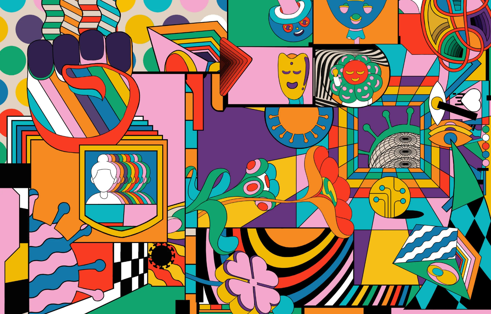

GitHub Takes Aim at Open Source Software Vulnerabilities
GitHub Advanced Security will help automatically spot potential
security problems in the world's biggest open source platform.
Coders’ Primal Urge to Kill Inefficiency—Everywhere
For software engineers, lack of friction is an aesthetic joy, an
emotional high, the ideal existential state. It’s what drives them—and
shapes our world.
Instagram Strikes a Sizable Blow in Silicon Valley's Tabs Vs Spaces
War
GitHub Finally Has Its Own Mobile Apps
First launched in 2008, the open source hub is launching its first
apps for iOS and Android.
5 Luggage Deals for Off-Season Savings
You might not be traveling right now, but there are sales on
everything from carry-ons to a cavernous wheeled duffel for your next
trip.

Meet This Year’s WIRED25: People Who Are Making Things Better
The scientists, technologists, artists, and chefs who are standing
between us and species collapse.